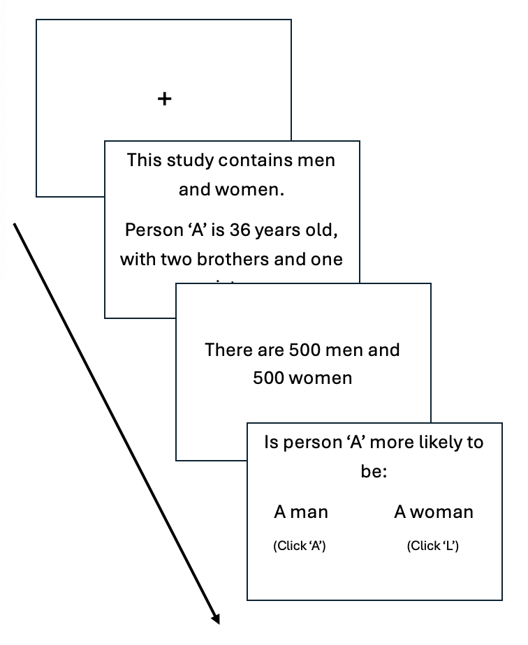
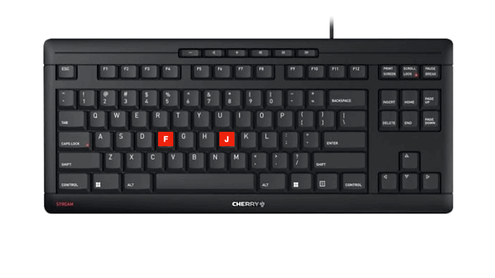

<!DOCTYPE html>
<html>

<head>
  <title>My experiment</title>
  <script src="https://unpkg.com/jspsych@8.2.2"></script>
  <!-- <script src="https://unpkg.com/@jspsych/plugin-html-keyboard-response@2.1.0"></script> -->
   <script src="/plugin-html-keyboard-responseindex.browser.min.js"></script>
  <script src="https://unpkg.com/@jspsych/plugin-image-keyboard-response@2.1.0"></script>
  <script src="https://unpkg.com/@jspsych/plugin-preload@2.1.0"></script>
  <script src="https://unpkg.com/@jspsych/plugin-survey-html-form@1.0.3"></script>
  <link href="https://unpkg.com/jspsych@8.2.2/css/jspsych.css" rel="stylesheet" type="text/css" />

  <link href="style.css" rel="stylesheet" type="text/css" />
</head>

<body></body>
<script>

  /* initialize jsPsych */
  var jsPsych = initJsPsych(
    {
      on_finish: () => /*jsPsych.data.displayData('csv')*/ jsPsych.data.get().localSave('csv', 'debug_data.csv'),
      // minimum_valid_rt: 1000,
    }
  );

  /* create timeline */
  var timeline = [];


  // comment from bellow this line

  /* define consent trial */
  var consent = {
    type: jsPsychSurveyHtmlForm,
    html: `
      <div class="consentFormDiv">
        <p><strong>Study Title:</strong> Make Your Choice! A Fast-And-Slow Decision Task</p>
        <p></p>
        <p><strong>Name and Contact Information of Researchers:</strong> Emily Schwartz, Carleton University, Department of Psychology</p>
        <p>Email: emilyschwartz@cmail.carleton.ca</p>
        <p></p>
        <p>Supervisor: Dr. Guy Lacroix, Carleton University, Department of Psychology</p>
        <p>Email: guylacroix@cunet.carleton.ca</p>
        <p></p>
        <p><strong>Carleton University Project Clearance</strong></p>
        <p><strong>Clearance #:</strong> #125129</p>
        <p><strong>Study Clearance Date:</strong></p>
        <p></p>
        <p><strong>Invitation:</strong> You are invited to take part in a research study
        titled "Make Your Choice! A Fast-And-Slow Decision Task". The information provided
        here is intended to help you understand what the study involves so that you can
        decide whether you want to participate. Your participation in this study is
        completely voluntary, and choosing not to participate will not affect you in any
        way. Please take your time to read this form carefully, and feel free to ask any
        questions before making your decision.<p>
        <p></p>
        <p><strong>What is the purpose of the study?</strong> This study aims to investigate
        the factors that influence decision-making. You will complete an online, computerized
        task where you will respond to a series of base-rate questions based on your first
        inclination. Additionally, you will complete three logic problems. This study will
        help researchers better understand the factors related to decision-making.</p>
        <p></p>
        <p><strong>What will I be asked to do?</strong> If you choose to participate,
        you will complete an online, computer-based decision-making task. During the task,
        you will be responding to a series of base-rate problems. In these problems,
        you will be presented with two possible groups that a certain Person A might
        belong to. You will be given a brief description of Person A, in addition to
        the number of people found in each of the two groups. You will then be asked
        to state which group you believe Person A belongs to, based on the information
        provided. You will be asked to make this decision within two seconds, based
        on your first inclination. Following these base-rate problems, you will be asked
        to complete three logic problems. The entire session, including instructions, the
        base-rate task, and the logic questions, is expected to take approximately 30 minutes.</p>
        <p></p>
        <p><strong>Risks and Inconveniences:</strong> There will be no more risks than you would
        otherwise encounter sitting in front of a computer for approxiimately 30 minutes. If at
        any point you feel discomfort, you may take breaks or withdraw from the study without penalty.</p>
        <p></p>
        <p><strong>Possible Benefits:</strong> You may not receive any direct benefit from your
        participation in this study. However, your participation may allow researchers to better
        understand the factors that guide decision-making.</p>
        <p></p>
        <p><strong>Compensation/Incentives:</strong> You will receive 0.5% course credit for
        participating in this study. If you choose to withdraw at any point, you will still receive
        the full credit.</p>
        <p></p>
        <p><strong>No waiver of your rights:</strong> By signing this form, you are not waiving any
        rights or releasing the researchers from any liability.</p>
        <p></p>
        <p><strong>Withdrawing from the study:</strong> You may withdraw consent at any time. If
        you choose to withdraw during the study, all information collected from you before your
        withdrawal will still be used. If you decide that you would like your data deleted, you may
        email the experimenters. This is possible up until the final day of the semester in which
        you participated. For the fall semester, the last day to withdraw is December 5th, 2025. For
        the winter semester, the last day to withdraw is April 8th, 2026.</p>
        <p></p>
        <p><strong>Confidentiality:</strong> We will remove all identifying information from downloaded
        data as soon as possible, which will be after the semester in which you take place. We will treat
        personal information as confidential, although absolute privacy cannot be guaranteed. No
        information that discloses your identity will be released or published without your specific consent.
        Research records may be accessed by the Carleton University Research Ethics Board to ensure 
        continuing ethics compliance. The results of this study may be published or presented at an academic
        conference or meeting, published in a manuscript, or otherwise shared with the academic community,
        but the data will be presented so that it will not be possible to identify any participants unless
        you give your express consent. Anonymized data will be shared publicly. The data may be used for secondary
        analyses (i.e., for purposes unrelated to this study). For the portion of the experiment taking part on
        Pavlovia, your data will be stored and protected by Pavlovia, in a server located in France, but may be
        disclosed via a court order or data breach.</p>
        <p></p>
        <p><strong>Data Retention:</strong> Data will be kept on a password protected server. Anonymized data will
        be made available on freely accessible websites (e.g., OSF) and shared with any interested parties.
        Anonymized data will be stored indefinitely.</p>
        <p></p>
        <p><strong>New information during the study:</strong> In the event that any changes could affect your
        decision to continue participating in this study, you will be promptly informed.</p>
        <p></p>
        <p><strong>Ethics review:</strong> This project was reviewed and cleared by the Carleton University
        Research Ethics Board B. If you have any ethical concerns with this study, please contact Carleton
        University Research Ethics Board (by phone at 613-520-2600 ext. 2517 or by email at ethics@carleton.ca).</p>
        <p></p>
        </div>
      `,
  };
  timeline.push(consent);

  // Consent form trial
  const consentForm = {
    type: jsPsychSurveyHtmlForm,
    preamble: `
        <p><strong>Statement of Consent</strong></p>
        <p>By entering your full name and checking the box, you agree to participate.</p>
      `,
    html: `
        <p>First Name / Last Name <input name="name" type="text" id="nameField" /></p>
        <p><label><input name="I_Consent" type="checkbox" id="consentBox" /> I consent</label></p>
      `,
    button_label: "Continue",

    on_load: function () {
      const nameField = document.getElementById('nameField');
      const consentBox = document.getElementById('consentBox');
      // const continueButton = document.querySelector('.jspsych-btn');
      const continueButton = document.getElementById('jspsych-survey-html-form-next');

      // Disable the button initially
      continueButton.disabled = true;

      // Enable the button only if both fields are valid
      function validate() {
        if (nameField.value.trim() !== "" && consentBox.checked) {
          continueButton.disabled = false;
        } else {
          continueButton.disabled = true;
        }
      }

      // Listen for input changes
      nameField.addEventListener('input', validate);
      consentBox.addEventListener('change', validate);
    }
  };

  timeline.push(consentForm);

  /* Volume Check */

  var volumeup = {
    type: jsPsychHtmlKeyboardResponse,
    stimulus: `
    <p>Please turn the volume up on your device.</p>
    <p>Click the icon below. What number do you hear?</p>
    <button id="playaudio" class="jspsych-btn jspsych-survey-html-form">🔊 Click Here</button>
    <audio src="audio/197014__margo_heston__seven-m.mp3"  controls class="audioPlayer" id="seven"></audio>
    `,
    on_load: function () {
      const playaudiobutton = document.getElementById('playaudio');

      // Enable the button only if both fields are valid
      function playthedamaudio(){
        event.preventDefault(); 
           const audio = document.getElementById("seven");
    audio.play();
      }

      function wrongkeyLOL() {
alert("You have pressed the wrong Key! Booo! Try again lol");

      }


      // Listen for input changes
      playaudiobutton.addEventListener('click', playthedamaudio);

      document.onkeypress = function (e) {
        e = e || window.event;
        if (e.key != "7"){
          wrongkeyLOL();
        }

      }


    },

    on_finish: function (){

document.onkeypress = null;
    },

    choices: ['7']
  };
  timeline.push(volumeup)

  /* define first instructions trial */
  var instructions1 = {
    type: jsPsychSurveyHtmlForm,
    html: `
        <div style="max-width: 60vw;">
        <p><strong>Please read the following instructions carefully.</strong></p>
        <p></p>
        <p>In a big research project, a number of studies were carried out where short personality
        descriptions of the participants were made. In every study, there were participants from
        two population groups (e.g., carpenters and policemen).<br />In each study, one participant was
        drawn at random from the sample. You'll also get information on how many participants are in
        each population group. You'll be asked to indicate to which population group the participant
        most likely belongs.</p>
        <p></p>
        
        </div>
      `,
    button_label: "Continue",
  };
  timeline.push(instructions1);

  /* define second instructions trial */
  var instructions2 = {
    type: jsPsychSurveyHtmlForm,
    html: `
        <p>There are no right or wrong answers. <br/> 
        Please respond based on your first inclination. <br/>
        Do not spend too much time thinking about each decision.</p>
        <p></p>

      `,
    button_label: "Continue"
  };
  timeline.push(instructions2);
  // comment out to this line

  /* define third instructions trial */

  var instructions3 = {
    type: jsPsychSurveyHtmlForm,
    html: `
    <p>The decision screen will look like this:<p/>
    
    <p>At each decision screen, you will hear a bell ring. Two seconds later, you will hear a buzzer.<p/>
    <p>You must provide a response between the ring of the bell and the sound of the buzzer.</p>
    <button id="playaudio" class="jspsych-btn jspsych-survey-html-form">🔊 Click here to hear audio</button>
    <audio src="audio/2second_ding_buzz.mp3"  controls class="audioPlayer" id="warningbeeps"></audio>
    <br/>
    `,
    on_load: function () {
      const playaudiobutton = document.getElementById('playaudio');

      // Enable the button only if both fields are valid
      function playthedamaudio(){
        event.preventDefault(); 
           const audio = document.getElementById("warningbeeps");
    audio.play();
      }

      // Listen for input changes
      playaudiobutton.addEventListener('click', playthedamaudio);
    }

  };
  timeline.push(instructions3)

  /* keyboard f and j */

    var keyboardredyprompt = {
    type: jsPsychHtmlKeyboardResponse,
    stimulus: `
    
    <div style="font-size:40px;">
      <p>Place your hands over the F and J keys.</p>
      <p>You will use these keys to submit your responses.</p>
      
    </div>
    
    
    `
    ,
    choices: "NO_KEYS",
    trial_duration: 11000
  };

  timeline.push(keyboardredyprompt);

  /* define fourth instructions trial */

    var instructions4 = {
      type: jsPsychSurveyHtmlForm,
      html: `
      <p>The experiment will start with three practice trials.<p/>
      <p>Please press "Continue" when you are ready to begin.<p/>
      `,
      button_label: "Continue"
    };
    timeline.push(instructions4)

  /* experimental trials */
  /* exp. trial 1 */

  var fixation = {
    type: jsPsychHtmlKeyboardResponse,
    stimulus: '<div style="font-size:60px;">+</div>',
    choices: "NO_KEYS",
    trial_duration: 1000
  };

  // simple stereotype template
  const stereotypeTemplate = (text) => `
  <div class="stereotypeDiv">
    <p>${text}</p>
  </div>
`;

  // simple base rate template
  const baseRateTemplate = (text) => `
  <div class="baseRateDiv">
    <p>${text}</p>
  </div>
`;

  // participant response with two options
  const participantResponseTemplate = (option1, option2) => `
  <div style="font-size:30px;">
    <p>What is most likely?</p>
    <table class="participantResponseTable">
      <tr>
        <td class="option"><span>${option1}</span><br/></td>
        <td class="divider"></td>
        <td class="option"><span>${option2}</span><br/></td>
      </tr>
      <tr>
        <td><span class="participantResponseKeyNudge">(Click F)</span></td>
        <td></td>
        <td><span class="participantResponseKeyNudge">(Click J)</span></td>
      </tr>
    </table>
  </div>
  <audio id="warningbeeps"
            src="audio/2second_ding_buzz.mp3"
            class="audioPlayer"></audio>
`;

  const participantReproabResponseTemplate = (PreviousSelection) => `
  <div style="font-size:30px;">
    <p>Your answer was ${PreviousSelection}.</p>
    <table class="participantResponseTable">
      <tr>
        <td class="option"><span>I am keeping this answer.</span><br/></td>
        <td class="divider"></td>
        <td class="option"><span>I am changing this answer.</span><br/></td>
      </tr>
      <tr>
        <td><span class="participantResponseKeyNudge">(Click F)</span></td>
        <td></td>
        <td><span class="participantResponseKeyNudge">(Click J)</span></td>
      </tr>
    </table>
  </div>
`;

  var stereotype = {
    type: jsPsychHtmlKeyboardResponse,
    stimulus: function () {
      return stereotypeTemplate(jsPsych.evaluateTimelineVariable('stereotypeText'));
    },
    choices: "NO_KEYS",
    trial_duration: 15000
  };

  var baserate = {
    type: jsPsychHtmlKeyboardResponse,
    stimulus: function () {
      return baseRateTemplate(jsPsych.evaluateTimelineVariable('baseRateText'));
    },
    choices: "NO_KEYS",
    trial_duration: 6000
  };

  var participantResponse = {
    type: jsPsychHtmlKeyboardResponse,
    stimulus: function () {
      return participantResponseTemplate(
        jsPsych.evaluateTimelineVariable('option1'),
        jsPsych.evaluateTimelineVariable('option2')
      );
    },
    on_load: function () {
      // Wait 1 seconds after the trial loads, then play
      setTimeout(() => {
        const audio = document.getElementById("warningbeeps");
        if (audio) audio.play();
      }, 1000);
    },

    choices: ['f', 'j'],
    trial_duration: 4000,
    response_start_time: 1000,
    response_end_time: 3000,
    data: { task: jsPsych.timelineVariable('dataName') }
  };

  var participantResponseReprobe = {
    type: jsPsychHtmlKeyboardResponse,

    stimulus: function () {
      const taskName = jsPsych.evaluateTimelineVariable('dataName');

      const lastTrialData = jsPsych.data
        .get()
        .filter({ task: taskName })
        .last(1)
        .values()[0];

      let previousSelection = null;

      if (lastTrialData && lastTrialData.response != null) {
        if (lastTrialData.response === 'f') {
          previousSelection = jsPsych.evaluateTimelineVariable('option1');
        } else if (lastTrialData.response === 'j') {
          previousSelection = jsPsych.evaluateTimelineVariable('option2');
        }
      }

      // If there was no previous selection, show nothing.
      if (!previousSelection) {
        return '';
      }

      // Must return a string of HTML
      return participantReproabResponseTemplate(previousSelection);
    },

    // Make trial_duration dynamic so it can depend on previous response
    trial_duration: function () {
      const taskName = jsPsych.evaluateTimelineVariable('dataName');

      const lastTrialData = jsPsych.data
        .get()
        .filter({ task: taskName })
        .last(1)
        .values()[0];

      // If no previous response, end this trial immediately
      if (!lastTrialData || lastTrialData.response == null) {
        return 0;
      }

      // Otherwise, standard 18000 ms duration
      return 18000;
    },

    choices: ['f', 'j'],


    data: {
      task: function () {
        return jsPsych.evaluateTimelineVariable('dataName') + '_reprobe';
      }
    }
  };


  const practiceprocedure = {
    timeline: [fixation, stereotype, baserate, participantResponse],
    timeline_variables: [
      /* start of question 1 */
      {
        dataName: "practice_question1",
        baseRateText: `There are 500 pool players and 500 basketball players.`,
        stereotypeText: `This study contains pool players and basketball players.<br/>Jason is a randomly chosen participant in this study.<br/>He is 29 years old and has lived his whole life in New York.<br/>He has green eyes and black hair.<br/>He drives a light gray car.`,
        option1: "Jason is a pool player",
        option2: "Jason is a basketball player",
      },
      /* end of question 1 */
      /* start of question 2 */
      {
        dataName: "practice_question2",
        baseRateText: `There are 500 people who live in New York and 500 people who live in Los Angeles.`,
        stereotypeText: `This study contains people who live in New York and people who live in Los Angeles.<br/>Christopher is a randomly chosen participant of this study.<br/>Christopher is 28 years old.<br/>He has a girlfriend and shares an apartment with a friend.<br/>He likes watching basketball.`,
        option1: "Christopher lives in New York",
        option2: "Christopher lives in Los Angeles",
      },
      /* end of question 2 */
      /* start of question 3 */
      {
        dataName: "practice_question3",
        baseRateText: `There are 500 computer science majors and 500 English majors.`,
        stereotypeText: `This study contains computer science majors and English majors.<br/>Matt is a randomly chosen participant of this study. Matt is 20 years old and lives in downtown Toronto. Matt's favourite food is pasta with meatballs. His parents are living in Vancouver.`,
        option1: "Matt is a computer science major",
        option2: "Matt is an English major",
      },
    ]
  };

  timeline.push(practiceprocedure);


  var realquestions = {
    type: jsPsychSurveyHtmlForm,
    html: `
      <p>Now that you have completed the practice trials, you will begin the experimental trials.</p>
      <p>Please press "Continue" when you are ready to proceed.<p/>`,
    button_label: "Continue",
  };
  timeline.push(realquestions);

  const experimentalprocedure = {
    timeline: [fixation, stereotype, baserate, participantResponse, participantResponseReprobe],
    timeline_variables: [
      /* start of question 1 */
      {
        dataName: "expQ1",
        baseRateText: `There are 4 men and 996 women.`,
        stereotypeText: `This study contains men and women.<br/>Person A is a randomly chosen participant of this study.<br/>Person A is 23 years old and is finishing a degree in engineering.<br/>On Friday nights, Person A likes to go out cruising with friends while listening to loud music and drinking beer.`,
        option1: "Person A is a man",
        option2: "Person A is a woman",
      },
      /* end of question 1 */
      /* start of question 2 */
      {
        dataName: "expQ2",
        baseRateText: `There are 5 engineers and 995 lawyers.`,
        stereotypeText: `This study contains engineers and lawyers.<br/>Jack is a randomly chosen participant of this study.<br/>Jack is 36 years old.<br/>He is not married and somewhat introverted.<br/>He likes to spend his free time reading science fiction and writing computer programs.`,
        option1: "Jack is an engineer",
        option2: "Jack is a lawyer",
      },
      /* end of question 2 */
      /* start of question 3 */
      {
        dataName: "expQ3",
        baseRateText: `There are 995 participants who buy their clothes at high-end retailers, and 5 participants who buy their clothes at Wal-Mart.`,
        stereotypeText: `This study contains participants who buy their clothes at high-end retailers and participants who buy their clothes at Wal-Mart.<br/>Karen is a randomly chosen participant of this study.<br/>Karen is a 33-year-old female.<br/>She works in a business office and drives a Porsche.<br/>She lives in a fancy penthouse with her boyfriend.`,
        option1: "Karen buys her clothes at high-end retailers",
        option2: "Karen buys her clothes at Wal-Mart",
      },
      /* end of question 3 */
      /* start of question 4 */
      {
        dataName: "expQ4",
        baseRateText: `There are 3 participants living in condos and 997 living in farmhouses.`,
        stereotypeText: `This study contains people living in condos and people living in farmhouses.<br/>Kurt is a randomly chosen participant of this study.<br/>Kurt works on Wall Street and is single.<br/>He works long hours and wears Armani suits to work.<br/>He likes wearing shades.`,
        option1: "Kurt lives in a condo",
        option2: "Kurt lives in a farmhouse",
      },
      /* end of question 4 */
      /* start of question 5 */
      {
        dataName: "expQ5",
        baseRateText: `There are 997 girls and 3 boys.`,
        stereotypeText: `This study contains girls and boys.<br/>Person B is a randomly chosen participant of this study.<br/>Person B is 13 years old.<br/>Person B's favourite subject is art.<br/>Person B's favourite things to do are shopping and having sleepovers with friends to gossip about other kids at school.`,
        option1: " Person B is a girl",
        option2: "Person B is a boy",
      },
      /* end of question 5 */
      /* start of question 6 */
      {
        dataName: "expQ6",
        baseRateText: `There are 997 nurses and 3 doctors.`,
        stereotypeText: `This study contains nurses and doctors.<br/>Paul is a randomly chosen participant of this study.<br/>Paul is 34 years old.<br/>He lives in a beautiful home in a posh suburb.<br/>He is well spoken and very interested in politics.<br/>He invests a lot of time in his career.`,
        option1: "Paul is a nurse",
        option2: "Paul is a doctor",
      },
      /* end of question 6 */
      /* start of question 7 */
      {
        dataName: "expQ7",
        baseRateText: `There are 4 participants who prefer Star Trek, and 996 participants who prefer Days of Our Lives.`,
        stereotypeText: `This study contains participants whose favourite series is Star Trek and participants whose favourite series is Days of Our Lives.<br/>Jeremy is a randomly chosen participant of this study.<br/>Jeremy is 26 and doing graduate studies in physics.<br/>He stays at home most of the time and likes to play video games.`,
        option1: "Jeremy's favourite series is Star Trek",
        option2: "Jeremy's favourite series is Days of Our Lives",
      },
      /* end of question 7 */
      /* start of question 8 */
      {
        dataName: "expQ8",
        baseRateText: `There are 997 participants who have tattoos and 3 participants who do not have tattoos.`,
        stereotypeText: `This study contains people with and without tattoos.<br/>Jay is a randomly chosen participant of this study.<br/>Jay is a 29-year-old man.<br/>He has served a short time in prison.<br/>He has been living on his own for 2 years now.<br/>He has an older car and listens to punk music.`,
        option1: "Jay has a tattoo",
        option2: "Jay has no tattoo",
      },
      /* end of question 8 */
      /* start of question 9 */
      {
        dataName: "expQ9",
        baseRateText: `There are 996 kindergarten teachers and 4 executive managers.`,
        stereotypeText: `This study contains kindergarten teachers and executive managers.<br/>Lilly is a randomly chosen participant of this study.<br/>Lilly is 37 years old.<br/>She is married and has 3 kids.<br/>Her husband is a veterinarian.<br/>She is committed to her family and always watches the daily cartoon shows with her kids.`,
        option1: "Lilly is a kindergarten teacher",
        option2: "Lilly is an executive manager",
      },
      /* end of question 9 */
      /* start of question 10 */
      {
        dataName: "expQ10",
        baseRateText: `There are 4 Bruce Springsteen fans and 996 Britney Spears fans.`,
        stereotypeText: `This study contains Bruce Springsteen fans and Britney Spears fans.<br/>Tara is a randomly chosen participant of this study.<br/>Tara is 15.<br/>She loves to go shopping at the mall and to talk with her friends about their crushes at school.`,
        option1: "Tara is a Bruce Springsteen fan",
        option2: "Tara is a Britney Spears fan",
      },
      /* end of question 10 */
      /* start of question 11 */
      {
        dataName: "expQ11",
        baseRateText: `There are 5 sixteen-year-olds and 995 fifty-year-olds.`,
        stereotypeText: `This study contains sixteen-year-olds and fifty-year-olds.<br/>Ellen is a randomly chosen participant of this study.<br/>Ellen likes to listen to hip hop and rap music.<br/>She enjoys wearing tight shirts and jeans.<br/>She's fond of dancing and has a small nose piercing.`,
        option1: "Ellen is sixteen",
        option2: "Ellen is fifty",
      },
      /* end of question 11 */
      /* start of question 12*/
      {
        dataName: "expQ12",
        baseRateText: `There are 5 Americans and 995 French people.`,
        stereotypeText: `This study contains Americans and French people.<br/>Martine is a randomly chosen participant of this study.<br/>Martine is 26 years old.<br/>She is bilingual and reads a lot in her spare time.<br/>She is a very fashionable dresser and great cook.`,
        option1: "Martine is American",
        option2: "Martine is French",
      },
      /* end of question 12 */
    ]
  };

  timeline.push(experimentalprocedure);

  // Cognitive Reflection Test

  // CRT Question 1

  const CRT1 = {
    type: jsPsychSurveyHtmlForm,
    preamble: `
        <p><strong>Question 1</strong></p>
        <p>A bat and a ball cost $1.10 total; the bat costs $1.00 more than the ball.</p>
      `,
    html: `
        <p>How many dollars does the ball cost? <input name="name" type="text" id="CRT1responsefield" /></p>
      `,
    button_label: "Continue",
  };

  timeline.push(CRT1);

  // CRT Question 2

  const CRT2 = {
    type: jsPsychSurveyHtmlForm,
    preamble: `
        <p><strong>Question 2</strong></p>
        <p>If 5 machines make 5 widgets in 5 minutes, how long will 100 machines take to make 100 widgets?</p>
      `,
    html: `
        <p> <input name="name" type="text" id="CRT2responsefield" /></p>
      `,
    button_label: "Continue",

  };

  timeline.push(CRT2);

  // CRT Question 3

  const CRT3 = {
    type: jsPsychSurveyHtmlForm,
    preamble: `
        <p><strong>Question 3</strong></p>
        <p>In a lake, a patch of lily pads doubles in size each day.</p>
      `,
    html: `
        <p>If it covers the entire lake in 48 days, how long did it take to cover half? <input name="name" type="text" id="CRT3responsefield" /></p>
      `,
    button_label: "Continue",

  };

  timeline.push(CRT3);

  /* start the experiment */
  jsPsych.run(timeline);
  // console.log(jsPsych.data.get())

</script>

</html>